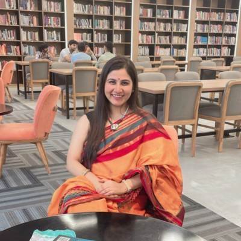

Niharika Tewari
Doctoral Ph.D. researcher working at the intersection of artificial intelligence, brain graphs, and biomedical imaging. Research focuses on explainable graph neural networks, brain aging, and AI-driven approaches to neurodegenerative disease diagnosis. Academic affiliations with RMIT University and BITS Pilani, K.K. Birla Goa Campus.
- Artificial Intelligence
- Explainable Artificial Intelligence (XAI)
- Graph Neural Networks
- Deep Learning
- Machine Learning
- Medical Informatics
- Biomedical Imaging
- Neuroimaging
- Brain Connectivity
- Brain Network Analysis
- Computational Neuroscience
- Neurodegenerative Diseases
- Alzheimer's Disease
- Dementia Diagnosis
- Disease Progression Prediction
- Multimodal Learning
- Graph Representation Learning
- Explainable Healthcare AI
- Precision Medicine
- AI in Healthcare
- Functional Connectivity
- Topological Data Analysis
- Persistent Homology
- Biomarker Discovery
- Trustworthy Artificial Intelligence
- Medical Image Analysis
- Predictive Analytics
- Computational Biology
- Healthcare Data Science
- Research in Artificial Intelligence
Active Research Programs
Track 1: Explainable AI for Dementia Diagnosis and Brain Connectivity
Research on explainable graph neural networks for understanding brain connectivity, identifying neurological biomarkers, and supporting dementia diagnosis. Our paper, “Explainable Graph Neural Networks: Understanding Brain Connectivity and Biomarkers in Dementia,” has been accepted for publication in ACM Transactions on Computing for Healthcare. The research focuses on interpretable graph learning approaches for investigating brain network alterations and their relevance to neurodegenerative diseases. Accepted.
Track 2: Brain Graph Learning for Psychiatric Diagnosis
Research on data-efficient brain graph learning and graph augmentation for psychiatric diagnosis. Our paper, “Structure Matters: Brain Graph Augmentation via Learnable Edge Masking for Data-efficient Psychiatric Diagnosis,” was accepted at the Australasian Joint Conference on Artificial Intelligence (AJCAI 2025). The work investigates learnable edge masking to improve brain graph representations under limited-data conditions. Accepted — AJCAI 2025.
Track 3: Graph Transformers for Neurodevelopmental Disorder Classification
Research on graph transformer architectures and mixture-of-experts learning for neurodevelopmental disorder classification. Our manuscript, “Multiscale Mixture-of-Experts Graph Transformer for Neurodevelopmental Disorder Classification,” was submitted to IEEE Transactions on Cognitive and Developmental Systems in July 2026 and is currently under review. Under Review.
Academic Milestones and Recognition
Cotutelle Ph.D. researcher affiliated with RMIT University and BITS Pilani, K.K. Birla Goa Campus, since September 2023. Recipient of the Best Poster Award at the SCT Doctoral Colloquium at RMIT University in December 2025. Research interests include explainable artificial intelligence, graph neural networks, biomedical imaging, brain connectivity, and neurodegenerative disease prediction.
Selected Publications and Preprints
- Explainable Graph Neural Networks: Understanding Brain Connectivity and Biomarkers in Dementia (ACM Transactions on Computing for Healthcare, 2025). DOI:10.1145/3859277 — Accepted.
- Structure Matters: Brain Graph Augmentation via Learnable Edge Masking for Data-efficient Psychiatric Diagnosis (Australasian Joint Conference on Artificial Intelligence, 2025). Springer paper — Accepted.
- Multiscale Mixture-of-Experts Graph Transformer for Neurodevelopmental Disorder Classification (IEEE Transactions on Cognitive and Developmental Systems, 2026) — Under review.
Research focus: Explainable graph neural networks, brain connectivity, neurological biomarker discovery, structure-aware graph learning, data-efficient psychiatric diagnosis, and multiscale graph transformers for neurodevelopmental disorder classification.
Book chapter / research publication
- Artificial Intelligence in Finance and Industry: Opportunities and Challenges (Decision Strategies and Artificial Intelligence Navigating the Business Landscape, 2023). Read paper — Accepted.
IEEE conference publication
- A Review of Omega Based Portfolio Optimization (2019 International Conference on Power Electronics, Control and Automation (ICPECA), IEEE). IEEE paper — Accepted.
Research focus: Omega-based portfolio optimization, risk-aware asset allocation, and Conditional Value-at-Risk (CVaR).
Complete publication list with additional works available on ResearchGate
Editorial Roles and Peer Review
- Academic Editor, PLOS Digital Health (2025 to present)
- Editorial Board, Intl. Journal of Diabetes and Endocrinology
- Editor in Chief, Intl. Journal of Epidemiology and Public Health Research (2024 to present)
- PLOS Digital Health (36)
- European Journal of Preventive Cardiology (7)
- European Heart Journal Digital Health (2)
- Diabetes and Metabolic Syndrome (2)
- Nature Reviews (1)
- Journal of Advances in Medicine and Medical Research (1)
Methods and Computational Tooling
Contact and Collaboration
Academic email: s4044597@student.rmit.edu.au
Research correspondence: niharikatewari565@gmail.com
Available for research collaborations, academic partnerships, peer review assignments, and interdisciplinary research opportunities in computational neuroscience, graph neural networks, explainable artificial intelligence (XAI), multimodal neuroimaging, and AI-driven brain health research. Particularly interested in developing interpretable, topology-aware, and multimodal deep learning frameworks for brain disorder classification, brain age estimation, and biomarker discovery, with a focus on translational AI for neuroscience and healthcare.